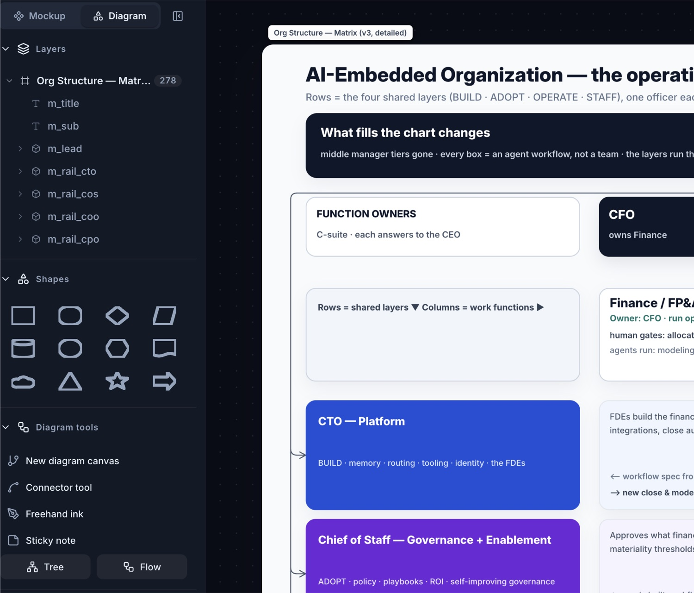
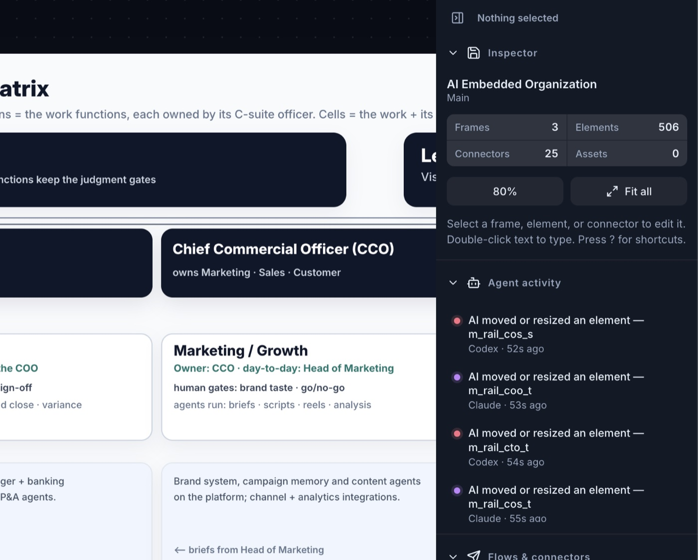
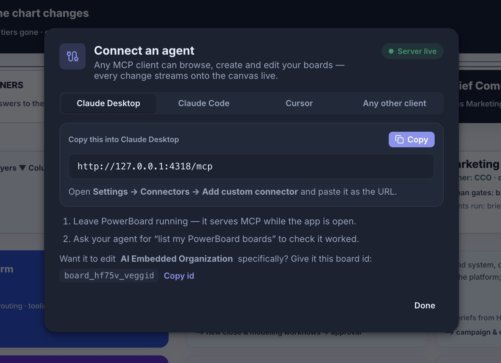
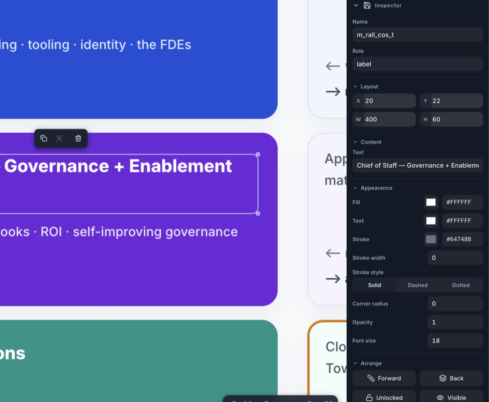
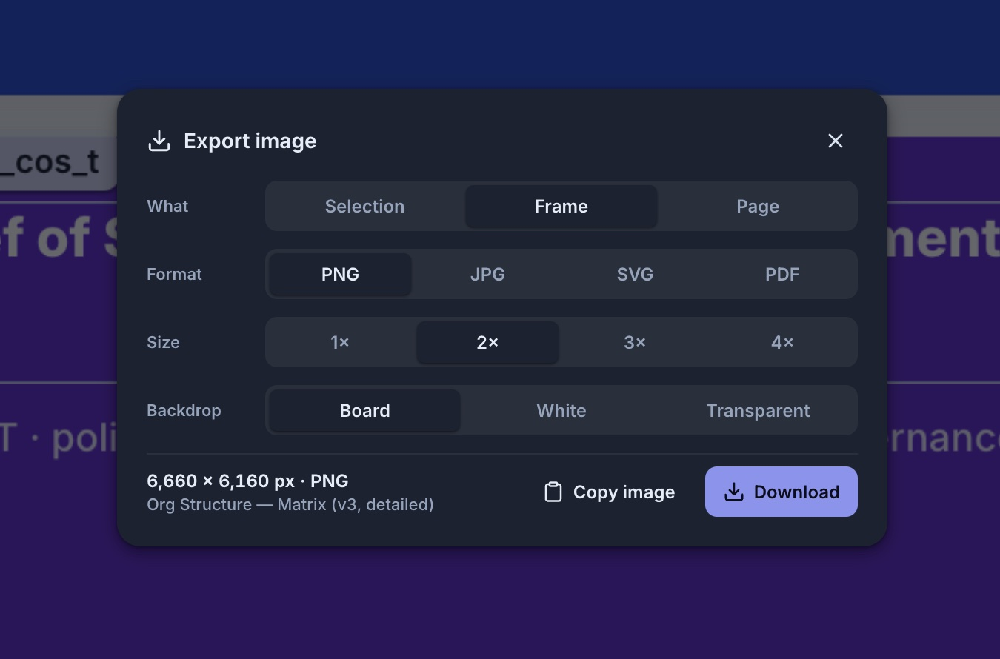

Two jobs, one object model.
Hi-fi app mockups and diagrams live on the same canvas, in the same file, under the same schema. A diagram shape is an element type; a connector is one connector system with anchoring and routing.
The palettes differ — device artboards and an app kit for mockups, shapes and flow tools for diagrams — but nothing is duplicated between two half-products. Switch the palette; the board doesn't change underneath you.

Agents edit beside you, and you can watch.
An agent's edit isn't a file it hands back. It's an operation applied to the live board — validated, undoable, broadcast to your canvas the moment it lands, and attributed to the agent that made it.
The activity feed reads in plain language, not as a log dump, and the element it touched pulses on the canvas so you can see the work happen instead of diffing for it afterwards.

Any MCP client, one URL.
PowerBoard serves its own MCP endpoint while the app is open. Paste one URL into Claude Desktop, Claude Code, Cursor, or anything else that speaks MCP, and ask it to list your boards.
47 tools are exposed — inspect the hierarchy, create frames, add elements and connectors, apply layouts, preview an operation before it's applied, validate the board, undo, and export.

An inspector that leads with structure.
Position, size and appearance in compact rows you can drag to scrub or type into — no sliders, because you can never hit an exact value with one and they cost four times the height.
Machine metadata is collapsed out of the way, so the fields you actually reach for are the ones at the top, and the layer tree stays above the fold where a structure tree belongs.

Export that actually hands you the file.
Pick what to export, the format, the size and the backdrop, and see the exact output dimensions before you commit. Then copy it straight to the clipboard, or download it.
For handoff rather than pixels, the same board leaves as an implementation spec, React + Tailwind, or a Mermaid diagram.
